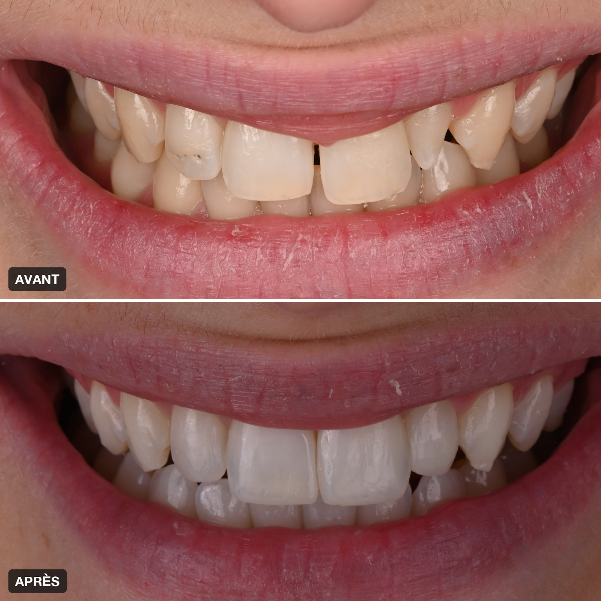
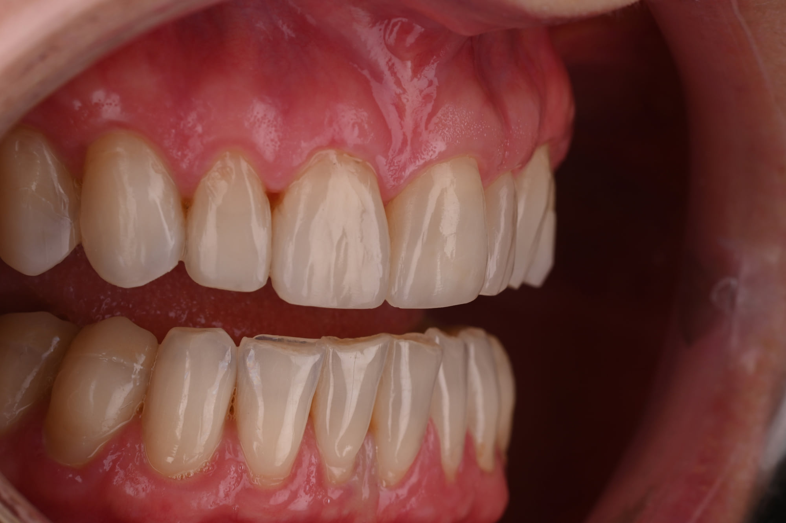
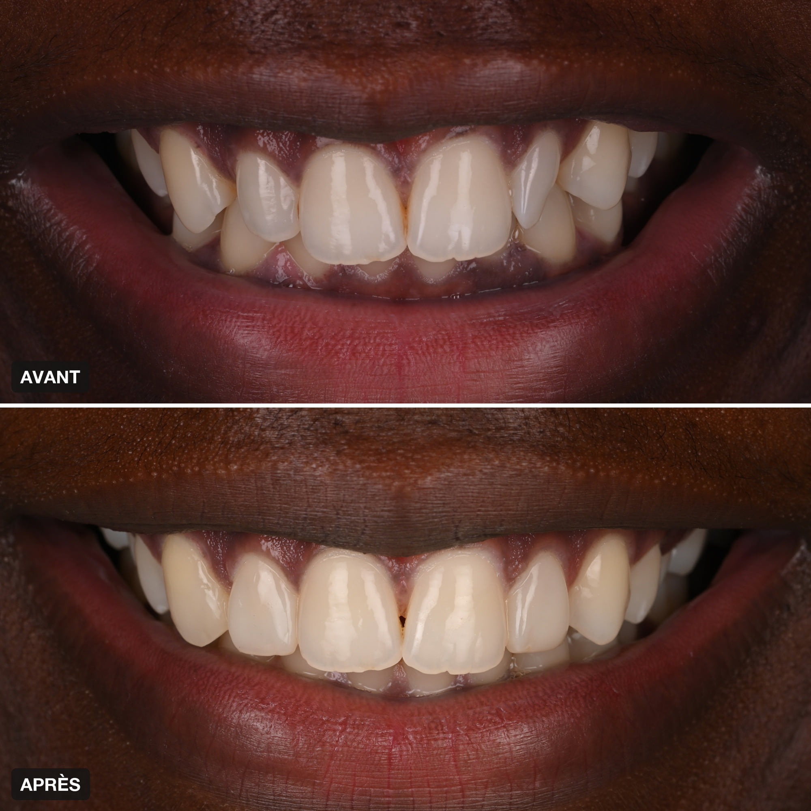
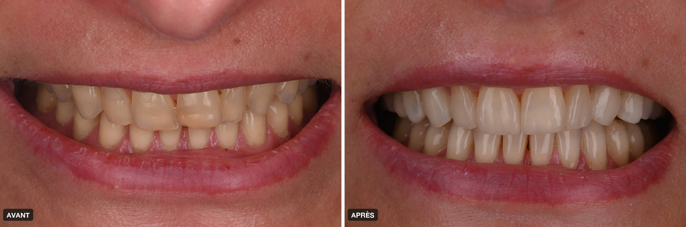
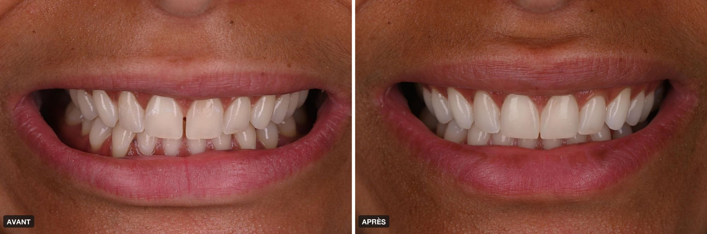
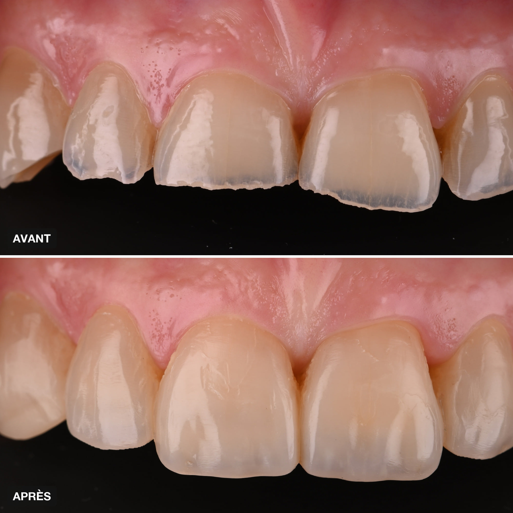

Accueil › Patient › Composite bonding
L’acte
Composite bonding
Résine stratifiée, en une séance
Le composite bonding permet d’ajouter directement une résine sur la dent pour modifier une forme, fermer un espace, restaurer un bord ou reconstruire une dent usée. Son intérêt est son caractère souvent très conservateur et réparable. En secteur antérieur, la qualité du résultat dépend fortement de la stratification, de l’anatomie, des finitions et du polissage : tous les composites ne donnent donc pas le même résultat esthétique.

Praticien hospitalier, Pitié-Salpêtrière · CMME, Sainte-Anne

1 / 5
Une technique conservatrice, mais exigeante
Une technique additive et conservatrice dont le résultat esthétique dépend fortement de la planification, de la stratification, de la forme et des finitions.
Une technique très conservatrice… mais très dépendante de celui qui la réalise
Le composite bonding consiste à ajouter directement une résine composite sur la dent afin d’en modifier la forme, fermer un espace, restaurer un bord incisif, corriger une asymétrie ou reconstruire une dent usée.
Son intérêt est double : il permet souvent d’obtenir une transformation esthétique importante sans retirer ou en retirant très peu de tissu dentaire, et il reste généralement réparable et modifiable dans le temps.
Mais en esthétique antérieure, tous les résultats ne se ressemblent pas. La qualité finale dépend fortement de la planification, de la maîtrise de la forme, de la stratification, des finitions et du polissage. Les données disponibles montrent d’ailleurs que les facteurs opérateur et technique influencent les performances cliniques des restaurations antérieures.
Pourquoi le résultat d’un composite esthétique dépend-il autant du praticien ?
Un composite antérieur ne consiste pas simplement à « mettre une résine blanche sur une dent ».
Une dent naturelle possède plusieurs niveaux de translucidité, différentes saturations, une opalescence, une texture de surface, des lignes de transition et des proportions précises. Reproduire cet ensemble nécessite une véritable construction optique et anatomique.
Dans ma pratique, le composite bonding repose sur un travail de stratification et de finition exigeant, nourri notamment par des formations avancées en esthétique restauratrice, dont plusieurs suivies en Italie.
 En vidéo · 49 sLe composite bonding en une minuteVoir la vidéo →
En vidéo · 49 sLe composite bonding en une minuteVoir la vidéo →

2 / 5
La stratification
Qu’est-ce que la stratification composite ?
Construire une dent couche après couche
La stratification consiste à superposer différentes masses de composite aux propriétés optiques différentes : masses plus opaques, masses dentine, masses émail, translucidités incisales et caractérisations selon le cas.
L’objectif n’est pas d’obtenir une dent « blanche ». L’objectif est d’obtenir une dent qui réagit à la lumière comme une dent naturelle, avec suffisamment de profondeur, de relief et de nuances pour s’intégrer au sourire.
Cette étape constitue l’une des principales différences entre un composite fonctionnel simple et un composite à haute exigence esthétique.

3 / 5
Quand on l’utilise
Dans quelles situations utilise-t-on le composite bonding ?
Faut-il tailler les dents pour faire du composite bonding ?
Très souvent, non ou très peu
L’un des grands intérêts du composite est son caractère additif. Dans de nombreux cas esthétiques, le traitement consiste principalement à ajouter de la matière sur la dent existante. Lorsqu’une correction de forme ou de surface est nécessaire, elle peut rester très limitée.
C’est pourquoi le composite occupe une place importante dans mon gradient thérapeutique : lorsqu’il permet d’obtenir le résultat recherché avec une intervention minimale, il constitue une solution particulièrement intéressante. Les recommandations contemporaines considèrent la résine composite directe comme une option restauratrice compatible avec une approche conservatrice lorsque l’indication est correcte.
Le composite peut notamment permettre de
- fermer un diastème ou de petits espaces ;
- augmenter légèrement la largeur ou la longueur d’une dent ;
- restaurer un bord incisif fracturé ou usé ;
- corriger une asymétrie ;
- modifier certaines proportions ;
- harmoniser plusieurs dents antérieures ;
- reconstruire des dents usées ;
- corriger certaines formes après orthodontie ;
- réaliser certaines transformations esthétiques sans recourir à la céramique.
Avant / après


4 / 5
Composite ou facettes, et pour combien de temps
Composite bonding ou facettes ?
Deux outils différents pour deux niveaux de transformation différents
Le composite offre généralement une intervention très conservatrice, un travail direct en bouche, une grande capacité de retouche et une réparabilité intéressante.
Les facettes céramiques permettent généralement une transformation plus globale, un contrôle très poussé de la forme, de la couleur et des proportions, et une collaboration étroite avec le céramiste.
La question n’est donc pas de savoir quel matériau est « meilleur », mais quel traitement permet d’obtenir le sourire souhaité avec le compromis esthétique, biologique et fonctionnel le plus adapté.
Quelle est la durée de vie d’un composite bonding ?
Plusieurs années, avec une logique d’entretien
Les restaurations composites antérieures présentent des performances cliniques satisfaisantes, mais leur longévité varie selon l’indication, la taille de la restauration, l’occlusion, les habitudes du patient, le protocole adhésif et les facteurs opérateur. Les réparations et réinterventions font partie de leur cycle de vie.
Dans ma pratique, je donne souvent comme repère clinique un ordre de grandeur autour de 6 à 7 ans, tout en expliquant qu’il ne s’agit pas d’une date d’expiration : certains composites nécessiteront une retouche plus tôt, d’autres resteront satisfaisants plus longtemps.
L’un des avantages du composite est précisément qu’il peut souvent être repoli, retouché, réparé ou complété.

5 / 5
Le déroulement, et ce que je recherche
Comment se déroule un traitement par composite esthétique ?
Selon l’importance du projet : analyse du sourire, photographies, scan numérique, planification des formes, éventuellement simulation, choix des masses et teintes, stratification, sculpture anatomique, finitions puis polissage.
Dans les cas les plus exigeants, la finition et le polissage ne sont pas des détails : ils participent directement à l’intégration optique, à la texture et au comportement de surface du composite.
Ce que je recherche avec un composite antérieur
Le but n’est pas que l’entourage se dise : « il a de beaux composites ».
Le but est que la dent reconstruite paraisse appartenir naturellement au sourire. Cela suppose de travailler la forme, le volume, les proportions, la lumière, les transitions, la texture et les détails qui font qu’une dent paraît vivante.
Questions fréquentes
Le composite se tache-t-il ou jaunit-il ?
Il peut perdre un peu de brillance ou se colorer légèrement en surface avec le temps, surtout avec le café, le thé, le vin rouge ou le tabac. Un polissage au cabinet lui rend son aspect : c’est l’un des intérêts du composite, il s’entretient.
Le composite bonding est-il réversible ?
Il est le plus souvent additif : la dent n’est pas ou très peu touchée, et le composite peut être retouché, modifié ou retiré. Parler de réversibilité absolue serait excessif ; c’est une approche très conservatrice et modifiable.
Combien de séances faut-il ?
Une seule séance pour la plupart des traitements, sans empreinte ni laboratoire : le composite est sculpté directement sur la dent. Un contrôle et un polissage de finition peuvent suivre.
Est-ce douloureux ?
Non. Quand le composite est simplement ajouté sur la dent, il n’y a le plus souvent pas besoin d’anesthésie.
Peut-on fermer un espace entre les dents avec du composite ?
Oui, dans de nombreux cas. La fermeture d’un diastème est une indication classique, à condition de respecter les proportions des dents et les contacts.
Que se passe-t-il si un composite s’ébrèche ?
Il se répare, le plus souvent sans tout refaire : on ajoute de la matière sur place, puis on repolit. La réparabilité est l’un des grands intérêts de cette technique.
Combien coûte un composite bonding ?
Le prix est établi de manière personnalisée, selon le nombre de dents et l’ampleur des corrections, et vous est remis après le bilan esthétique.
Imaginer la transformation avant de choisir le matériau
Une consultation esthétique permet de déterminer ce qui peut être obtenu par composite, ce qui justifierait éventuellement une facette et ce qui ne nécessite parfois aucun traitement restaurateur.
Prendre rendez-vousSources scientifiques
Les références ci-dessous soutiennent les principaux messages cliniques de cette page.
- [1] Wolff D, Frese C, Frankenberger R, et al. Direct Composite Restorations on Permanent Teeth in the Anterior and Posterior Region — An Evidence-Based Clinical Practice Guideline — Part 1: Indications for Composite Restorations. J Adhes Dent. 2024;26:185–200. — DOI : 10.3290/j.jad.b5748881 PubMed
- Burke FJT. Longevity of Indirect and Direct Restorations in Anterior Teeth. Prim Dent J. 2023;12(2):76–84. — DOI : 10.1177/20501684231175591 PubMed
- Shah YR, Shiraguppi VL, Deosarkar BA, Shelke UR. Long-term survival and reasons for failure in direct anterior composite restorations: A systematic review. J Conserv Dent. 2021;24(5):415–420. — DOI : 10.4103/jcd.jcd_527_21 PubMed
- Devlukia S, Hammond L, Malik K. Is surface roughness of direct resin composite restorations material and polisher-dependent? A systematic review. J Esthet Restor Dent. 2023;35(6):947–967. — DOI : 10.1111/jerd.13102 PubMed
- Repère clinique du Dr Franck Moyal : la durée « autour de 6 à 7 ans » est présentée comme un ordre de grandeur clinique individualisé, pas comme une durée garantie issue d’une étude unique.